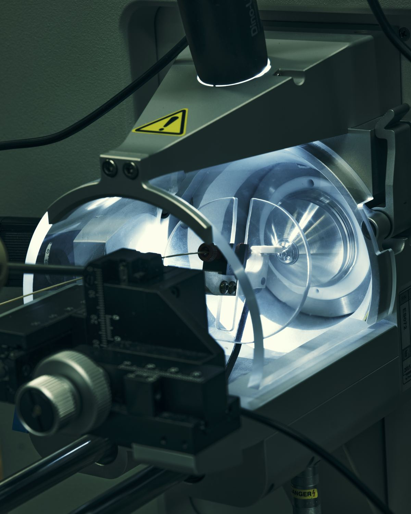
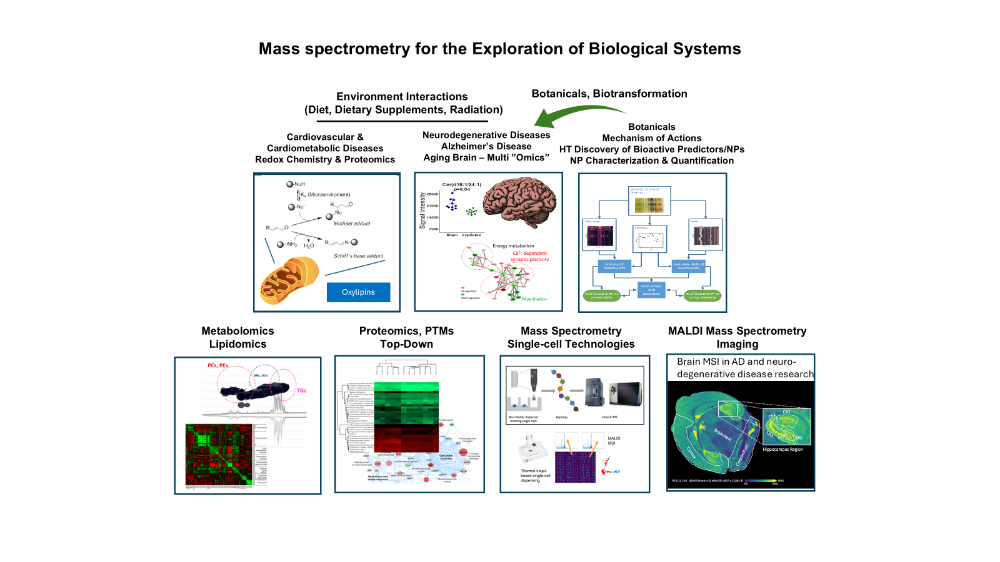
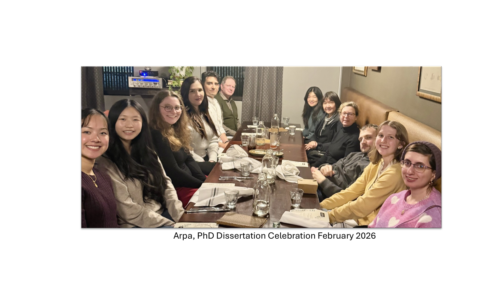
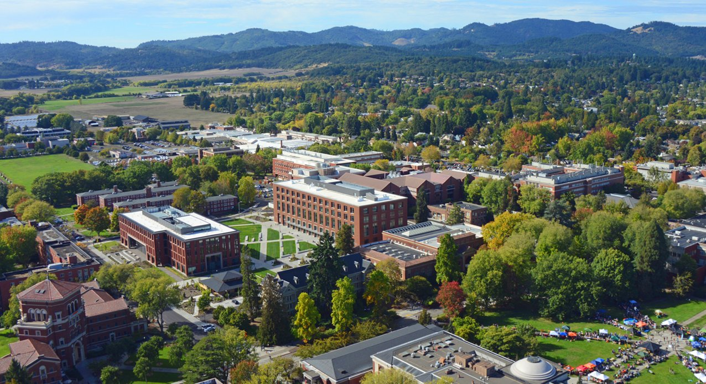

Department of Chemistry · Oregon State University
Maier Laboratory: Biomolecular Mass Spectrometry at Oregon State University
Develop. Detect. Characterize. Quantify. Discover.
We develop mass spectrometry technologies to detect, characterize, and quantify biomolecules, enabling discoveries in aging, disease mechanisms, single-cell biology, and systems biology. We apply mass spectrometry to the characterization of natural products and botanical supplements, to understand the impacts of bioactive dietary components and their metabolites on human health across the lifespan, and to help ensure their safety.

Research
Our mission is to develop analytical chemistry and mass spectrometry approaches to understand biological systems and improve human health.

Biomolecular Mass Spectrometry
MALDI Mass Spectrometry Imaging
Single-Cell Mass Spectrometry
Mass Spectrometry-based Omics
Diseases of Aging
Natural Products and Botanicals
agInnovation WEST — W5122
We are a member of the agInnovation WEST multistate research project W5122: Beneficial and Adverse Effects of Natural Chemicals on Human Health and Food Safety.
BENFRA Center
Dr. Maier leads the Botanical Research Core of the BENFRA Botanical Dietary Supplements Research Center (NIH U19 AT010829), funded by the National Center for Complementary and Integrative Health (NCCIH) and the Office of Dietary Supplements (ODS). BENFRA investigates Botanicals Enhancing Neurological and Functional Resilience in Aging, and is part of the NIH CARBON program.
NIH Shared Instrumentation Grants
Dr. Maier has served as Principal Investigator on multiple NIH Shared Instrumentation grants that have expanded mass spectrometry measurement capability at Oregon State University:
- Bruker Trapped Ion Mobility Spectrometry Quadrupole Time-of-Flight System (S10OD032323)
- Ultra-Performance Liquid Chromatography Tandem Quadrupole Mass Spectrometry System — Waters Xevo TQ-XS Mass Spectrometer (S10OD026922)
- Thermo Orbitrap Fusion Lumos (S10OD020111)
- Ion Mobility Time-of-Flight Mass Spectrometry System (S10RR025628)
Team
Claudia S. Maier
Professor, Department of Chemistry
Claudia S. Maier is Professor in the Department of Chemistry at Oregon State University and an adjunct faculty in the Linus Pauling Institute. She earned her Ph.D. in Analytical Chemistry from the University of Konstanz. Her laboratory develops and applies mass spectrometry-based approaches to study biomolecules and their interactions and dynamics in relation to biological function, including how biological systems respond to exposure, stress, and disease.
Postdoctoral Scholar
- Stanislau StanisheuskiPostdoctoral Scholar Single-cell mass spectrometry technology development; single-cell proteomics (shared with Maude David, Department of Microbiology)
Research Associate
- Luke MarneyResearch Associate MALDI mass spectrometry imaging; mass spectrometry-based omics and computation (with Robyn Tanguay, Department of Environmental and Molecular Toxicology)
Graduate Students
- Rudranil DuttaPhD Candidate Mass spectrometry method development for the characterization of botanicals and impact on metabolism
- Maryam NikpayamPhD Candidate Cancer proteomics; senescence in cancer
- Jessica EtterPhD Candidate Mass spectrometry methods for detection and characterization of microbial biotransformation products of botanical constituents
- Sima ZiyaeeGraduate Student Single-cell mass spectrometry
- Oshoma ErumiseliGraduate Student Mass spectrometry method development for the characterization of botanicals and their adulteration; mass spectrometry for understanding the beneficial and adverse effects of natural compounds, target engagement, and impact on health
- Andrew WoodGraduate Student Mass spectrometry for omics science; methods for the characterization of target engagement of botanicals and drugs in model systems
Undergraduate Researchers
- Josh SmithUndergraduate Researcher Honors thesis advisor: Luke Marney
- Gabe ErwinUndergraduate Researcher Mentor: Andrew Wood
- Galina BikmurzinaUndergraduate Researcher Mentor: Sima Ziyaee

Publications
Our publication record is kept current on Google Scholar and ORCID.

Contact
Address
Oregon State University
Department of Chemistry
153 Gilbert Hall
Corvallis, OR 97331